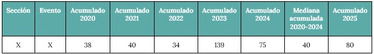

BOLETÍN EPIDEMIOLÓGICO NACIONAL
N° 760 - Semana Epidemiológica 23 - Año 2025
Desde 01/06 al 07/06 - Fecha de publicación: 17/06/2025
Desde 01/06 al 07/06 - Fecha de publicación: 17/06/2025
Las tablas se elaboran con datos basados en la fecha de notificación (o fecha de apertura del caso) en el Sistema Nacional de Vigilancia de la Salud (SNVS 2.0), considerando las semanas epidemiológicas (SE) seleccionadas de los años 2020 a 2025.
Para calcular la mediana de los valores acumulados entre 2020 y 2024, se ordenan los datos de menor a mayor y se toma el valor central (tercer puesto en un conjunto de cinco años).
Por ejemplo, si el evento X presentó los siguientes valores entre la SE 1-10 de cada año:
Sección, Evento, Acumulado 2020, Acumulado 2021, Acumulado 2022, Acumulado 2023, Acumulado 2024, Mediana acumulada, 2020-2024, Acumulado 2025
X,X,38,40,34,139,75,40,80
Los valores ordenados serían: 34, 38, 40, 75, 139, por lo que la mediana es 40. En este caso, los 80 casos de 2025 se compararían con la mediana de 40, resultando en un incremento absoluto de 40 casos y un aumento del 100% en términos porcentuales.
El procedimiento de cálculo es el mismo para ambas tablas, con la diferencia de que en la segunda tabla se incluye el total de notificaciones además de los casos confirmados.
Algunas consideraciones clave sobre las tablas:
El sarampión es una enfermedad viral, altamente contagiosa, que puede presentarse en todas las edades. Su gravedad es mayor en niños menores de 5 años o desnutridos, en los cuales puede causar graves complicaciones respiratorias como neumonía y del sistema nervioso central como convulsiones, meningoencefalitis, ceguera, encefalomielitis postinfecciosa con retraso mental grave y trastornos degenerativos tardíos que no tienen tratamiento o incluso causar la muerte. Se transmite mediante gotas de aire de la nariz, boca, o garganta de una persona infectada. El virus puede persistir en el aire o sobre superficies, siendo activo y contagioso por 2 horas. No existe ningún tratamiento antiviral específico contra el virus del sarampión, solo existen medidas de sostén clínico y de sus complicaciones. Puede prevenirse con la vacunación.
En 2025, se han notificado un total de 2.968 casos de sarampión (2.698 confirmados, 270 probables) en 9 jurisdicciones (Alberta, Columbia Británica, Manitoba, Territorios del Noroeste, Nueva Escocia, Ontario, Isla del Príncipe Eduardo, Quebec, Saskatchewan), hasta el 31 de mayo de 2025. En la semana 22 (del 25 al 31 de mayo de 2025), se notificaron 225 nuevos casos de sarampión (208 confirmados y 17 probables) en 4 jurisdicciones (Alberta, Manitoba, Ontario y Saskatchewan).
https://health-infobase.canada.ca/measles-rubella/.
Al 12 de junio de 2025, se notificaron un total de 1.197 casos confirmados de sarampión en 35 jurisdicciones: Alaska, Arkansas, Arizona, California, Colorado, Florida, Georgia, Hawái, Illinois, Indiana, Iowa, Kansas, Kentucky, Luisiana, Maryland, Michigan, Minnesota, Misuri, Montana, Nebraska, Nueva Jersey, Nuevo México, Ciudad de Nueva York, Estado de Nueva York, Dakota del Norte, Ohio, Oklahoma, Pensilvania, Rhode Island, Dakota del Sur, Tennessee, Texas, Vermont, Virginia y Washington. En 2025 se han notificado 21 brotes, y el 90% de los casos confirmados (1.072 de 1.197) están asociados a brotes. En comparación, durante 2024 se notificaron 16 brotes y el 69% de los casos (198 de 285) estuvieron asociados a brotes. En el 2025 ha habido 3 muertes confirmadas por sarampión.
Al 12 de junio, se han reportado 2.336 casos confirmados de sarampión acumulados en el 2025; en las 24 horas previas se reportaron 120 casos. Con base en la distribución de casos confirmados de sarampión por entidad federativa y municipios, 18 estados y 58 municipios tienen casos confirmados de sarampión. Se han reportado 5 fallecimientos.
El 11 de junio, Perú informó que hasta la SE 23 se han registrado 272 casos sospechosos y 4 confirmados. De los casos confirmados, dos corresponden a casos importados en hermanos menores de edad y no vacunados, residentes en el distrito de Ate, con antecedentes de viaje reciente a Kansas (EEUU) y exposición conocida a un caso confirmado de sarampión. Los dos casos confirmados adicionales corresponden al personal sanitario que prestó asistencia a uno de los casos importados.
El Ministerio de Salud y Deportes informó que hasta el día 6 de junio hay tres casos de sarampión registrados en 2025. El último caso confirmado corresponde a un niño de 8 años. Se informa que se han tomado medidas de aislamiento del paciente y sus contactos, así como la búsqueda activa de contactos y un barrido de al menos 25 manzanas alrededor del domicilio para ejecutar el bloqueo vacunal.
Al 30 de mayo de 2025 el Ministerio de Salud y Bienestar informa sobre el brote de sarampión en curso. Se recolectaron muestras de 69 personas con fiebre y exantema. Se han confirmado 9 casos por laboratorio y 9 por nexo epidemiológico.
Aquí aparecería la información detallada al hacer clic en "Más Info" para Dengue. Puedes poner texto, imágenes o incluso otros gráficos aquí dentro.
Información adicional sobre los síntomas, tratamientos o medidas de precaución para Hantavirus.
Detalles sobre la campaña de vacunación, grupos de riesgo y beneficios de la vacuna contra la Influenza.